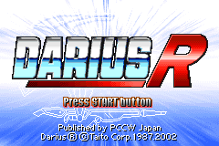

Darius R (Japan) (En)
EEPROM 4K Save Format Mapped (Family Spec) 💾 MultiBoot
Cartridge Identity
- Game Code
A2DJ(FamilyA2D)- Header Title
DARIUS R- Maker / Revision
G1/ rev0- ROM Size
- 4.0 MiB (4,194,304 B)
- Save Media
EEPROM 4K- SHA-256
295bf18bceab30e7969411d7ddfa718e2dfa4cd7eb3cbb5356990c20f9a0a4f8- Engine / SDK Group
comm-002(145 families)
Screenshots


Link Cable & Multiplayer Communications
This title contains detected communication capabilities: 💾 MultiBoot.
Detailed protocol specifications, SIO registers, Joybus commands, and MultiBoot sequences are documented in the Link & Multiplayer Reference.
- Single-Cart MultiBoot
- Single-Cartridge MultiBoot (Download Play) client/server handler · Thumb SWI 0x25 (
0xDF25):0x082166,0x082d30,0x0b4c92,0x0d6602
Battery Save Format Specification (Family Shared)
This release shares its save architecture with canonical family reference Aladdin (USA) (En,Fr,De,Es) (Family
A2D).
Open Family Save Format Spec (A2DE)Download save-format.json
- Canonical Specification
A2DE· 5 mapped fields · 1 verified checksum(s) · Confidence: HIGH- gbakit Built-In Support
- Built-in (A2DE)
gbakit save verify A2DE save.sav
gbakit save decode A2DE save.sav
gbakit save fix A2DE damaged.sav -o repaired.savROM Assets, Compression & Audio
- BIOS Compression
- LZ77 (
0x10): 0 streams · RLE (0x30): 0 streams - ROM Pointer Tables
- 4 tables (0 pointing to validated compressed streams)
- SDK Backup Tags
EEPROM_V122
Text, Fonts & Scene Data
- Primary Text Encoding
- Compressed / custom-encoded text (
22ASCII strings) - Font & VWF Indicators
- VWF Width Table 1bpp Font · BIOS SWIs: BitUnPack
0x10:4· LZ770x11/12:13· Huffman0x13:7· RLE0x14/15:9 - Scene & Packaging
3ROM pointer tables (≥32 entries,2≥200) ·0relativeu32TOCs ·153OAM metasprite hits